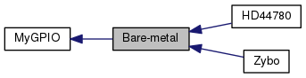

- Generato Sab 29 Lug 2017 11:19:44 per Zynq-7000 Driver Pack da
 1.8.13
1.8.13
|
Zynq-7000 Driver Pack
3.2
Implementazione C di device-driver per Xilinx Zynq-7000
|
device-driver OO-like bare-metal per device myGPIO Continua...
|  |
Moduli | |
| HD44780 | |
| driver per display Hitachi hd44780 basato su driver myGPIO bare-metal | |
| Zybo | |
Strutture dati | |
| struct | myGPIO_t |
| Struttura che astrae un device myGPIO. Continua... | |
Definizioni | |
| #define | myGPIO_MODE_OFFSET 0x00U |
| Offset, rispetto all'indirizzo base, del registro "mode" per il device myGPIO. Continua... | |
| #define | myGPIO_WRITE_OFFSET 0x04U |
| Offset, rispetto all'indirizzo base, del registro "write" per il device myGPIO. Continua... | |
| #define | myGPIO_READ_OFFSET 0x08U |
| Offset, rispetto all'indirizzo base, del registro "read" per il device myGPIO. Continua... | |
| #define | myGPIO_GIES_OFFSET 0x0CU |
| Offset, rispetto all'indirizzo base, del registro "gies" per il device myGPIO. Continua... | |
| #define | myGPIO_PIE_OFFSET 0x10U |
| Offset, rispetto all'indirizzo base, del registro "pie" per il device myGPIO. Continua... | |
| #define | myGPIO_IRQ_OFFSET 0x14U |
| Offset, rispetto all'indirizzo base, del registro "irq" per il device myGPIO. Continua... | |
| #define | myGPIO_IACK_OFFSET 0x18U |
| Offset, rispetto all'indirizzo base, del registro "iack" per il device myGPIO. Continua... | |
| #define | myGPIO_pin(i) ((uint32_t)(1<<(i))) |
| Metodo alternativo per la specifica di uno dei pin di un device myGPIO. Continua... | |
Tipi enumerati (enum) | |
| enum | myGPIO_mask { myGPIO_pin0 = 0x1U, myGPIO_pin1 = 0x2U, myGPIO_pin2 = 0x4U, myGPIO_pin3 = 0x8U, myGPIO_pin4 = 0x10U, myGPIO_pin5 = 0x20U, myGPIO_pin6 = 0x40U, myGPIO_pin7 = 0x80U, myGPIO_pin8 = 0x100U, myGPIO_pin9 = 0x200U, myGPIO_pin10 = 0x400U, myGPIO_pin11 = 0x800U, myGPIO_pin12 = 0x1000U, myGPIO_pin13 = 0x2000U, myGPIO_pin14 = 0x4000U, myGPIO_pin15 = 0x8000U, myGPIO_pin16 = 0x10000U, myGPIO_pin17 = 0x20000U, myGPIO_pin18 = 0x40000U, myGPIO_pin19 = 0x80000U, myGPIO_pin20 = 0x100000U, myGPIO_pin21 = 0x200000U, myGPIO_pin22 = 0x400000U, myGPIO_pin23 = 0x800000U, myGPIO_pin24 = 0x1000000U, myGPIO_pin25 = 0x2000000U, myGPIO_pin26 = 0x4000000U, myGPIO_pin27 = 0x8000000U, myGPIO_pin28 = 0x10000000U, myGPIO_pin29 = 0x20000000U, myGPIO_pin30 = 0x40000000U, myGPIO_pin31 = 0x80000000U, myGPIO_byte0 = 0x000000ffU, myGPIO_byte1 = 0x0000ff00U, myGPIO_byte2 = 0x00ff0000U, myGPIO_byte3 = 0xff000000U } |
| Maschere di selezione dei pin di un device myGPIO. Continua... | |
| enum | myGPIO_mode { myGPIO_read, myGPIO_write } |
| myGPIO_mode, modalità di funzionamento (lettura/scrittura) di un device myGPIO Continua... | |
| enum | myGPIO_value { myGPIO_reset, myGPIO_set } |
| myGPIO_value, valore di un myGPIO Continua... | |
Funzioni | |
| void | myGPIO_Init (myGPIO_t *gpio, uint32_t base_address) |
| Inizializza un device myGPIO. Continua... | |
| void | myGPIO_SetMode (myGPIO_t *gpio, myGPIO_mask mask, myGPIO_mode mode) |
| Permette di settare la modalità lettura/scrittura dei pin di un device myGPIO;. Continua... | |
| void | myGPIO_SetValue (myGPIO_t *gpio, myGPIO_mask mask, myGPIO_value value) |
| Permette di settare il valore dei pin di un device myGPIO, se configurati come output. Continua... | |
| void | myGPIO_Toggle (myGPIO_t *gpio, myGPIO_mask mask) |
| Permette di invertire il valore dei pin di un device myGPIO, se configurati come output. Continua... | |
| myGPIO_value | myGPIO_GetValue (myGPIO_t *gpio, myGPIO_mask mask) |
| Permette di leggere il valore dei pin di un device myGPIO;. Continua... | |
| myGPIO_mask | myGPIO_GetRead (myGPIO_t *gpio) |
| Restituisce la maschera dei pin settati di un device myGPIO. Continua... | |
| void | myGPIO_GlobalInterruptEnable (myGPIO_t *gpio) |
| Abilita gli interrupt globali;. Continua... | |
| void | myGPIO_GlobalInterruptDisable (myGPIO_t *gpio) |
| Disabilita gli interrupt globali;. Continua... | |
| myGPIO_value | myGPIO_IsGlobalInterruptEnabled (myGPIO_t *gpio) |
| Consente di verificare se gli interrupt globali siano abilitati. Continua... | |
| myGPIO_value | myGPIO_PendingInterrupt (myGPIO_t *gpio) |
| Consente di verificare se esistano interrupt non ancora serviti. Continua... | |
| void | myGPIO_PinInterruptEnable (myGPIO_t *gpio, myGPIO_mask mask) |
| Abilita gli interrupt per i singoli pin del device. Continua... | |
| void | myGPIO_PinInterruptDisable (myGPIO_t *gpio, myGPIO_mask mask) |
| Disabilita gli interrupt per i singoli pin del device. Continua... | |
| myGPIO_mask | myGPIO_EnabledPinInterrupt (myGPIO_t *gpio) |
| Consente di ottenere una maschera che indichi quali pin abbiano interrupt abilitati. Continua... | |
| myGPIO_mask | myGPIO_PendingPinInterrupt (myGPIO_t *gpio) |
| Consente di ottenere una maschera che indichi quali interrupt non siano stati ancora serviti;. Continua... | |
| void | myGPIO_PinInterruptAck (myGPIO_t *gpio, myGPIO_mask mask) |
| Invia al device notifica di servizio di un interrupt;. Continua... | |
device-driver OO-like bare-metal per device myGPIO
| #define myGPIO_GIES_OFFSET 0x0CU |
Offset, rispetto all'indirizzo base, del registro "gies" per il device myGPIO.
| #define myGPIO_IACK_OFFSET 0x18U |
Offset, rispetto all'indirizzo base, del registro "iack" per il device myGPIO.
| #define myGPIO_IRQ_OFFSET 0x14U |
Offset, rispetto all'indirizzo base, del registro "irq" per il device myGPIO.
| #define myGPIO_MODE_OFFSET 0x00U |
Offset, rispetto all'indirizzo base, del registro "mode" per il device myGPIO.
| #define myGPIO_PIE_OFFSET 0x10U |
Offset, rispetto all'indirizzo base, del registro "pie" per il device myGPIO.
| #define myGPIO_pin | ( | i | ) | ((uint32_t)(1<<(i))) |
Metodo alternativo per la specifica di uno dei pin di un device myGPIO.
| [in] | i | indice del bit da selezionare, da 0 (bit meno significativo) a 31 (bit più significativo) |
| #define myGPIO_READ_OFFSET 0x08U |
Offset, rispetto all'indirizzo base, del registro "read" per il device myGPIO.
| #define myGPIO_WRITE_OFFSET 0x04U |
Offset, rispetto all'indirizzo base, del registro "write" per il device myGPIO.
| enum myGPIO_mask |
Maschere di selezione dei pin di un device myGPIO.
| enum myGPIO_mode |
| enum myGPIO_value |
| myGPIO_mask myGPIO_EnabledPinInterrupt | ( | myGPIO_t * | gpio | ) |
Consente di ottenere una maschera che indichi quali pin abbiano interrupt abilitati.
| [in] | gpio | puntatore a myGPIO_t, che astrae un device myGPIO; |
| myGPIO_mask myGPIO_GetRead | ( | myGPIO_t * | gpio | ) |
Restituisce la maschera dei pin settati di un device myGPIO.
| [in] | gpio | puntatore a myGPIO_t, che astrae un device myGPIO; |
| myGPIO_value myGPIO_GetValue | ( | myGPIO_t * | gpio, |
| myGPIO_mask | mask | ||
| ) |
Permette di leggere il valore dei pin di un device myGPIO;.
| [in] | gpio | puntatore a myGPIO_t, che astrae un device myGPIO; |
| [in] | mask | maschera dei pin su cui agire; |
| myGPIO_set | se uno dei pin letti è myGPIO_set, |
| myGPIO_reset | se TUTTI i pin sono myGPIO_reset |
| void myGPIO_GlobalInterruptDisable | ( | myGPIO_t * | gpio | ) |
Disabilita gli interrupt globali;.
| [in] | gpio | puntatore a myGPIO_t, che astrae un device myGPIO; |
| void myGPIO_GlobalInterruptEnable | ( | myGPIO_t * | gpio | ) |
Abilita gli interrupt globali;.
| [in] | gpio | puntatore a myGPIO_t, che astrae un device myGPIO; |
| void myGPIO_Init | ( | myGPIO_t * | gpio, |
| uint32_t | base_address | ||
| ) |
Inizializza un device myGPIO.
Inizializza una struttura di tipo myGPIO_t, che astrae u device myGPIO, controllando che l'inizializzazione vada a buon fine, effettuando diversi test sui parametri di inizializzazione e restituendo un codice di errore.
| [in,out] | gpio | puntatore a myGPIO_t, che astrae un device myGPIO; |
| [in] | base_address | indirizzo di memoria a cui è mappato il device myGPIO; myGPIO_t gpio; myGPIO_init(&gpio, BASE_ADDRESS); |
| myGPIO_value myGPIO_IsGlobalInterruptEnabled | ( | myGPIO_t * | gpio | ) |
Consente di verificare se gli interrupt globali siano abilitati.
| [in] | gpio | puntatore a myGPIO_t, che astrae un device myGPIO; |
| myGPIO_set | se il bit 0 del registro GIES è settato, ad indicare che gli interrupt sono abilitati |
| myGPIO_reset | se il bit 0 del registro GIES è resettato, ad indicare che gli interrupt non sono abilitati |
| myGPIO_value myGPIO_PendingInterrupt | ( | myGPIO_t * | gpio | ) |
Consente di verificare se esistano interrupt non ancora serviti.
| [in] | gpio | puntatore a myGPIO_t, che astrae un device myGPIO; |
| myGPIO_set | se il bit 1 del registro GIES è settato, ad indicare che esistono interrupt pending |
| myGPIO_reset | se il bit 1 del registro GIES è resettato, ad indicare che non esistono interrupt pending |
| myGPIO_mask myGPIO_PendingPinInterrupt | ( | myGPIO_t * | gpio | ) |
Consente di ottenere una maschera che indichi quali interrupt non siano stati ancora serviti;.
| [in] | gpio | puntatore a myGPIO_t, che astrae un device myGPIO; |
| void myGPIO_PinInterruptAck | ( | myGPIO_t * | gpio, |
| myGPIO_mask | mask | ||
| ) |
Invia al device notifica di servizio di un interrupt;.
| [in] | gpio | puntatore a myGPIO_t, che astrae un device myGPIO; |
| [in] | mask | maschera di selezione dei bit; |
| void myGPIO_PinInterruptDisable | ( | myGPIO_t * | gpio, |
| myGPIO_mask | mask | ||
| ) |
Disabilita gli interrupt per i singoli pin del device.
| [in] | gpio | puntatore a myGPIO_t, che astrae un device myGPIO; |
| [in] | mask | maschera di selezione degli interrupt da disabilitare, quelli non selezionati non vengono disabilitati; |
| void myGPIO_PinInterruptEnable | ( | myGPIO_t * | gpio, |
| myGPIO_mask | mask | ||
| ) |
Abilita gli interrupt per i singoli pin del device.
| [in] | gpio | puntatore a myGPIO_t, che astrae un device myGPIO; |
| [in] | mask | maschera di selezione degli interrupt da abilitare;quelli non selezionati non vengono abilitati; |
| void myGPIO_SetMode | ( | myGPIO_t * | gpio, |
| myGPIO_mask | mask, | ||
| myGPIO_mode | mode | ||
| ) |
Permette di settare la modalità lettura/scrittura dei pin di un device myGPIO;.
| [in] | gpio | puntatore a myGPIO_t, che astrae un device myGPIO; |
| [in] | mask | maschera dei pin su cui agire; |
| [in] | mode | modalità di funzionamento dei pin; |
| void myGPIO_SetValue | ( | myGPIO_t * | gpio, |
| myGPIO_mask | mask, | ||
| myGPIO_value | value | ||
| ) |
Permette di settare il valore dei pin di un device myGPIO, se configurati come output.
| [in] | gpio | puntatore a myGPIO_t, che astrae un device myGPIO; |
| [in] | mask | maschera dei pin su cui agire; |
| [in] | value | valore dei pin |
| void myGPIO_Toggle | ( | myGPIO_t * | gpio, |
| myGPIO_mask | mask | ||
| ) |
Permette di invertire il valore dei pin di un device myGPIO, se configurati come output.
| [in] | gpio | puntatore a myGPIO_t, che astrae un device myGPIO; |
| [in] | mask | maschera dei pin su cui agire; |
1.8.13